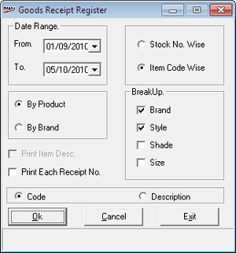

The Goods Register provides information on receipt of various items in the specified period. Details can be grouped based on Stock No. or Item Code. Further classification is possible if grouping is based on Item Code.
How to reach: Reports > Stock Registers > Item-wise Goods Register
The Goods Receipt Register window is displayed.

Date Range: By default, the From and To dates are the current Shoper date. You can enter any date range but the To date cannot be greater than the Shoper date.
Select Stock No. Wise or Item Code Wise to specify the report grouping. In case you have selected Item Code Wise, further grouping By Product or By Brand is possible. Additionally, the group BreakUp is enabled and code or description of the item can be displayed in the report.
Select By Product (class1) or By Brand (class2) to specify the second level of grouping. If you select By Product, the report breakup will be Brand, Style (subclass1), Shade (subclass2), Size. If you select By Brand, the report breakup will be Product, Style (subclass1), Shade (subclass2), Size.
BreakUp: Select Brand, Style, Shade and/ or Size to specify the fields to be displayed.
Select Code or Description to specify the value to be displayed in the report.
Print Item Desc.: Select to display the item description. This is enabled only if you have selected Stock No. Wise grouping.
Print Each Receipt No.: Select to display each receipt number in the report.